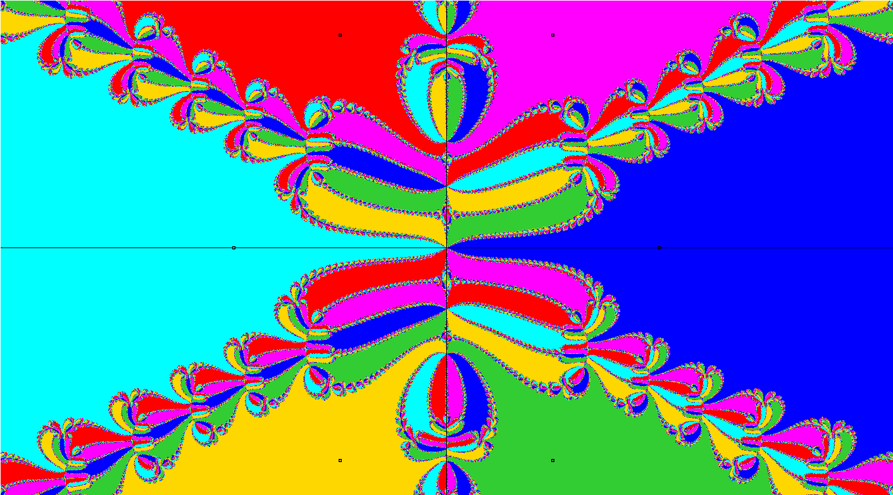

Paul L. Bailey, Ph.D.
Course Material 0505
Quote of the day
"Freedom is the freedom to say that two plus two make four. If that is granted, all else follows."
George Orwell, Author of 1984

AP Calculus AB
AP Calculus AB Lesson 0505
AP Calculus AB Homework 0505a
AP Calculus AB Homework 0505b
AP Calculus AB Homework 0505z
AP Calculus AB Homework 0504 Solutions
AP Calculus AB Teleconference Signin Sheet
AP Calculus AB Checkin 0505
AP Computer Science
AP Computer Science Lesson 0505
AP Computer Science Homework 0505
AP Computer Science Checkin 0505